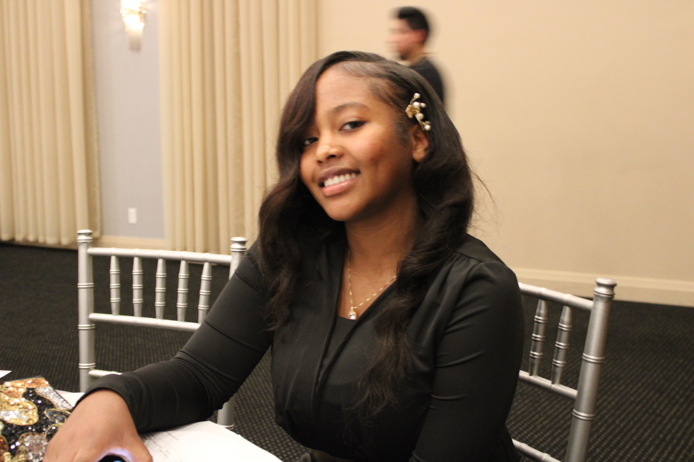
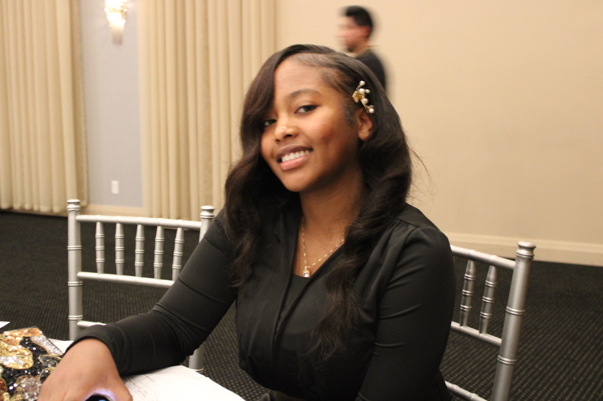

A picture of me

My name is Hattie Sosia. I am now a DIGIT major at Penn State Behrend in Erie, PA. Being creative is in my nature, so please explore my website to understand more about me. Thank you for stopping by! Here is a link to my website and reflection.
I live in Pittsburgh, PA, and I adore it because there is so much to see and do there, as well as so much creative invention. My keen interest is being creative explains why I am pursuing a DIGIT degree. I enjoy painting and believe that it is one of the most therapeutic activities accessible, considering that you are given the flexibility to paint anything, allowing you to use your creative mind to develop your artwork piece, which is fantastic. I also enjoy doing hands-on activities such as pottery and producing using softwares such as Adobe. Last but not least, music is enjoyable to me since it evokes feelings. I especially appreciate listening to gospel and peaceful music.
Reflection As a new learner, the most significant challenges are learning how to work with CSS and displaying the proper form of markup in order for everything to work. Another challenge is working with images and their sizings, as you may have to work with large images and reduce them to the size you want them to be. The advantage of WordPress is that you can easily paste an image, however in HTML you must figure out the necessary syntax in order for it to work. The challenges that arise with the layout and organization of each site are where you want to place the text and images in other words the arrangement of everything (For me it was difficult because I didn’t like my layout so I had to re arrange everything a lot of times in order for me to get what I thought looked great). Website comprehension is required. A lot of the time, one can get stuck locating a specific strategy layout or adjusting settings, therefore it’s vital to connect with the website or the software to know where everything is placed. I’d like to learn more about gallery styling and layout so I may experiment with different layout styles to make my website more appealing and advanced.
A picture of me
